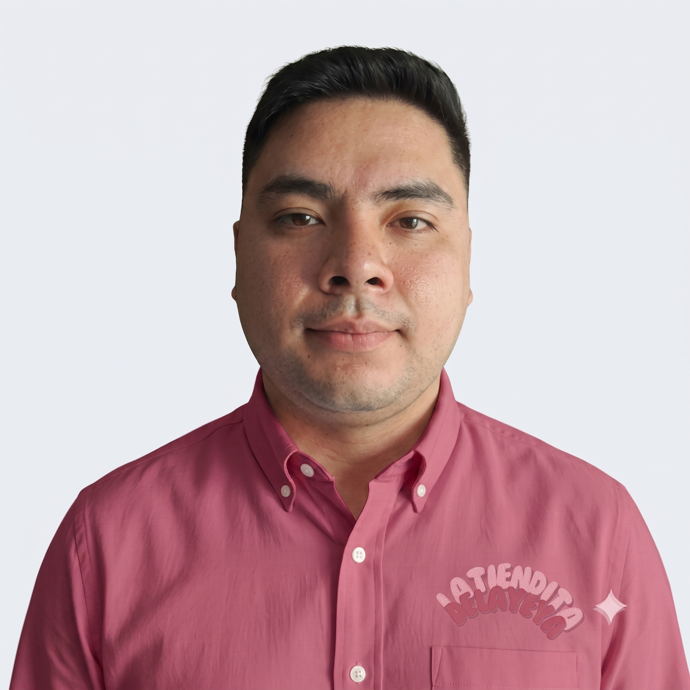
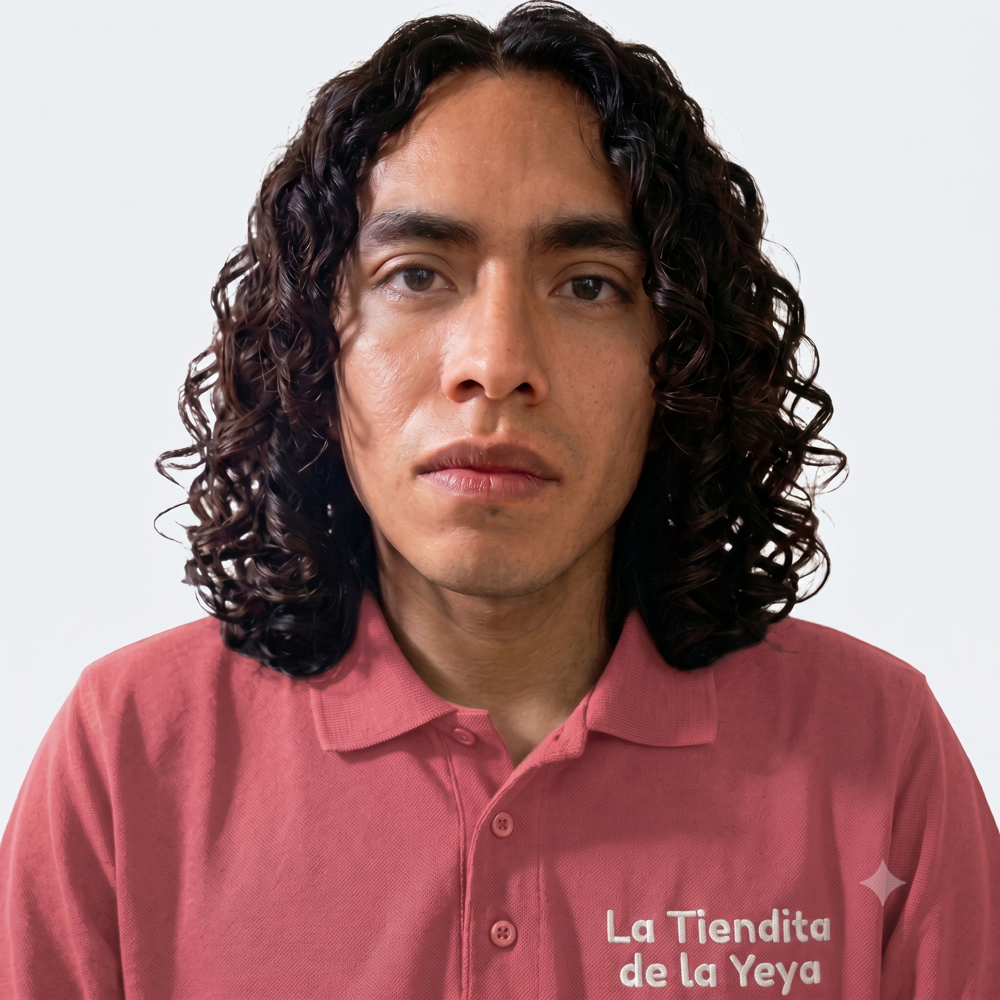

Nuestra historia
El Origen de un Estilo sin Moldes
La Tiendita de la Yeya nació de la idea de transformar los accesorios tradicionales en piezas únicas con temática y significado. Ofrecemos bisutería especializada que rompe con lo convencional, diseñada para que mujeres expresen su autenticidad, conecten con sus pasiones y se sientan plenamente identificados con su propio estilo.
Descripción
Accesorios para quienes llevan sus historias favoritas a todas partes.
Somos una tienda en línea creada con el propósito de reunir accesorios y bisutería inspirados en series, películas icónicas y anime, ofreciendo productos que permitan a cada persona expresar su estilo y sus gustos. Nuestro catálogo incluye principalmente joyería temática, además de una selección de lentes, accesorios para el cabello, glosses y llaveros.
Nuestro Propósito
Misión
Transformar los accesorios tradicionales en piezas únicas con temática y significado. Ofrecemos bisutería especializada que rompe con lo convencional, diseñada para que las mujeres expresen su autenticidad, conecten con sus pasiones y se sientan plenamente identificadas con su propio estilo.
Visión
Posicionarnos en el mercado en accesorios especializados y con temática. Buscamos redefinir la bisutería convencional, demostrando que un accesorio no es solo un adorno, sino una declaración de identidad que conecta profundamente con las personas.
Valores Fundamentales
Autenticidad
Creemos en materiales genuinos y prácticas transparentes. Cada gema está certificada y se obtiene de forma ética.
Artesanía
Honramos las técnicas consagradas de la alta joyería, asegurando que cada pieza sea robusta, impecable y hermosa.
Sostenibilidad
Estamos comprometidos a minimizar nuestra huella ambiental utilizando metales reciclados y apoyando la minería responsable.
Conoce a nuestro equipo
Las mentes brillantes y las manos expertas que hacen posible la magia detrás de cada colección de La Tiendita de la Yeya.

Ariadna Jazmín Vera Iglesias
Diseño, desarrollo y facilito proyectos tecnológicos. Conecto el trabajo técnico con los objetivos del equipo de manera simple y directa.
Brandon Essaw Cortez Beltrán
Creador de la base de datos y del desarrollo backend de la tienda en línea. Especialista en Java con gran interés en el cloud computing, enfocado en desarrollar infraestructura segura, eficiente y de alto rendimiento.

Cristian Giovany Rodriguez Rosales
Desarrollador Full Stack enfocado en diseñar soluciones técnicas eficientes. Colaboración activa en el desarrollo del código y en la resolución de problemas lógicos del proyecto.

Ernesto Nava Hernandez
Matemático con experiencia en el desarrollo backend Java. Desarrollo de la lógica de negocio del proyecto.
Irán Daniela Gutiérrez Salazar
Desarrolladora Full Stack egresada de Ingeniería en Sistemas Computacionales, enfocada en crear soluciones digitales eficientes. Especializada en el desarrollo moderno de aplicaciones web y móviles.
Israel Josue Martinez Ruiz
Desarrollador Full Stack Java Jr. con formación en Generation México. Experiencia en desarrollo web, gestión académica y entornos administrativos.
Joyce Martinez Zubieta
Especialista en Data Analytics y Profesional en Desarrollo Organizacional y desarrolladora Java. Mi perfil híbrido me permite impulsar soluciones técnicas estructuradas y mantener la sinergia óptima dentro de equipos multidisciplinarios.
Noe Santiago Lopez Damian
Desarrollador Java FullStack. Coordino y ejecuto tareas en diversas áreas del negocio, enfocando mi especialización técnica en el desarrollo backend mediante tecnologías como Java, JavaScript y bases de datos.

Yazmin Aurora Silva Olivares
Desarrolladora FullStack Java. Experiencia en desarrollo de soluciones web personalizadas, páginas web estáticas y E-commerce.